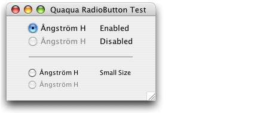

Property |
Type | Notes |
|---|---|---|
Quaqua.Component.visualMargin |
java.awt.Insets |
See layout |
Quaqua supports regular sized and small sized radio buttons.

You can change the size of the radio button by setting an appropriate font.
Radio buttons are displayed with regular size for the font Lucida Grande
13 and with small size for the font Lucida Grande 11.
|